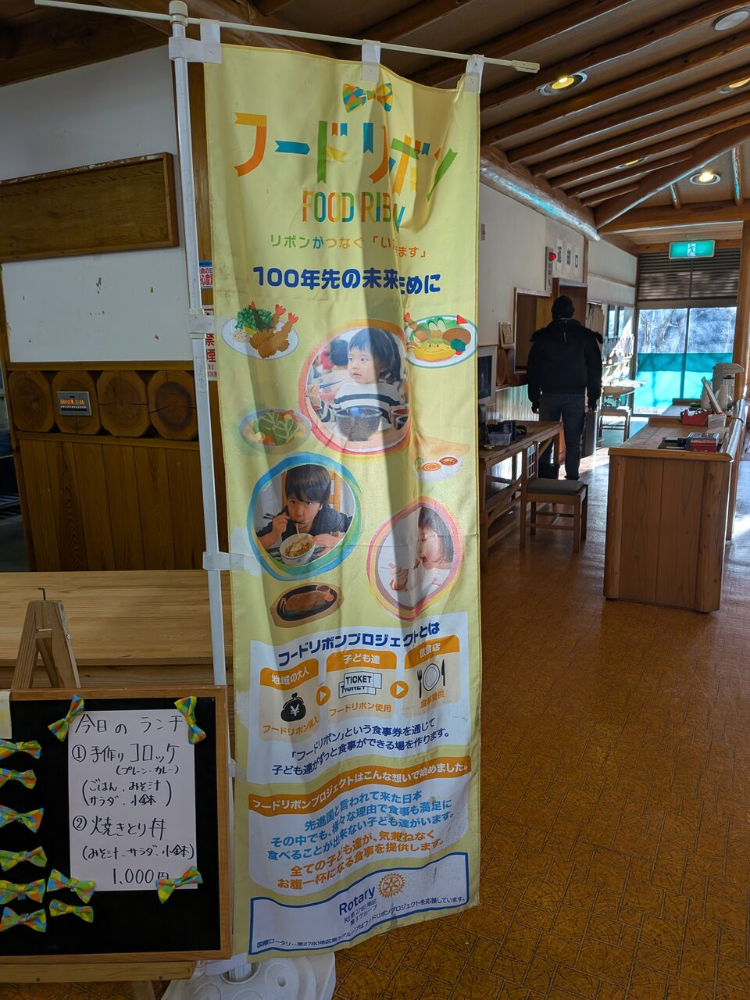
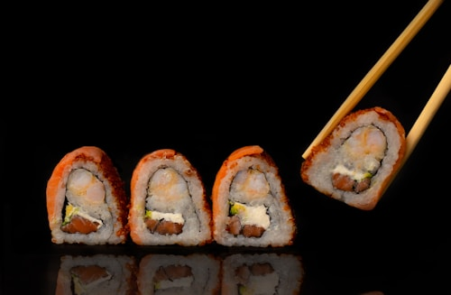

レストハウス支援
（飲食業）

奥槍戸山の家を中心に、地域の食文化や魅力を伝える飲食事業を支援します。
協同組合阿波山雅（あわさんが）は、奥槍戸を拠点に、自然と共生した地域づくりを進めています。 山の資源を活かした事業支援や交流を通じて、持続可能で豊かな山村の未来を目指します。


奥槍戸山の家を中心に、地域の食文化や魅力を伝える飲食事業を支援します。
地域の素材や技術を活かしたモノづくりをサポートし、販路拡大を目指します。
ゆずをはじめとする果樹栽培を支援し、安心・安全な山の恵みを届けます。

自然に囲まれた憩いの場で、地元の食や体験を楽しめる奥槍戸山の家。 登山や散策の拠点として、地域の皆さまや訪れる人々を温かくお迎えします。
詳しく見る →

阿波山雅の活動は、地域の皆さま、サポーターの皆さまのご支援によって支えられています。 自然や人とのつながりを大切にしながら、持続可能な地域づくりを進めていきます。